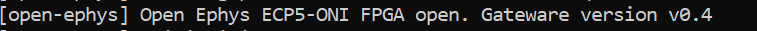
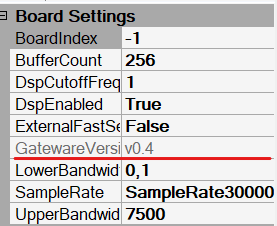

Here are the files and instructions to update the Open Ephys FPGA module inside the Acquisition Board.
Note
This is only for boards using the new Open Ephys FPGA (Dec 2022 onwards). Older systems do not require this.
The latest available gateware is version 0.4.
version 0.4
Download the Latest version of the gateware
Extract the contents of the file
Run the updater
On Windows: Double click on the file UpdateFPGA_v0_4.bat On Linux or Mac: Execute the file UpdateFPGA_v0_4.sh
On Windows: Double click on the file UpdateFPGA_v0_4.bat
UpdateFPGA_v0_4.bat
On Linux or Mac: Execute the file UpdateFPGA_v0_4.sh
UpdateFPGA_v0_4.sh
Wait a couple of minutes for the process to finish.
The programmer might appear frozen at some percentages, but it is working. In the rare case that something went wrong and it got stuck for more than 5 minutes it is safe to try again, just by unplugging the board from power and usb, plugging it again and executing the updater.
Some security features on mac might prevent the updater from running. A message indicating that libftd3xx.dylib is not signed might appear. The steps to solve this are:
libftd3xx.dylib
Go to system settings
Go to the Security and Privacy section
Unlock the page by clicking on the lower-left padlock icon. It will ask for your password
Near the bottom of the page, the library error will appear, click on allow
Run the updater again, if a window appears, it will have an open option now
open
After dragging the OE FPGA Acquisition Board plugin to the signal chain, a message in the console will appear, with the current running gateware.
OE FPGA Acquisition Board

After creating the Source/OpenEphys/AcquisitionBoard node, the properties at the right of the window will contain a GatewareVersion field.
Source/OpenEphys/AcquisitionBoard
GatewareVersion

If the version does not appear or appears as N/A when creating the node, it will be properly updated after acquisition starts.
N/A